Najlepsze źródła białka w Auchan
Hipermarket, lady i duże opakowania pod meal prep
Auchan to hipermarket: wygrywasz ceną za kilogram przy większych paczkach i lepszym wyborze ryb / mięsa z lady. Idealny na meal prep tygodniowy — niekoniecznie na „wpadkę po pracy po 2 produkty”.
Hit z Auchan: Twaróg wysokobiałkowy Mlekovita SBA
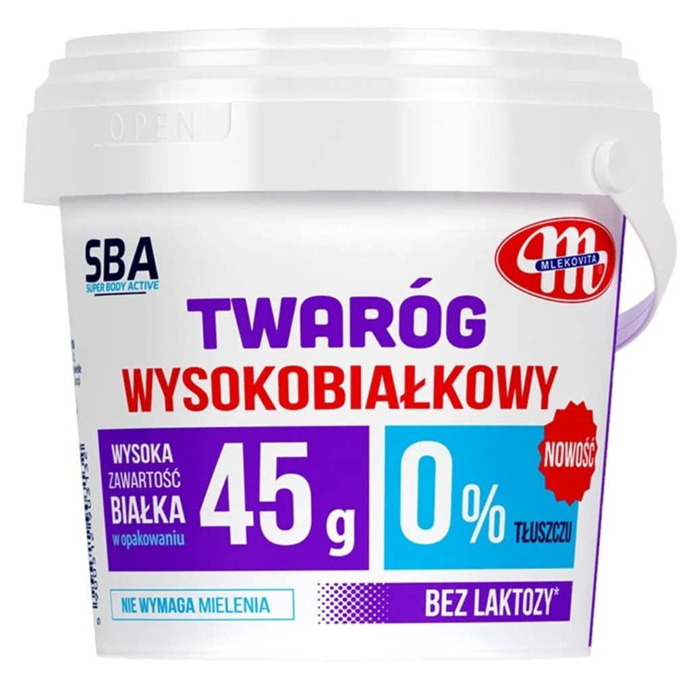
Twaróg wysokobiałkowy 0% tłuszczu, bez laktozy — Mlekovita Super Body Active (SBA), 500 g
Wiaderko marki Mlekovita z linii SBA: 0% tłuszczu, bez laktozy, nie wymaga mielenia. Na etykiecie 45 g białka w całym opakowaniu (500 g). Wygodne pod meal prep i serniki fit.
Dla porównania z innymi twarogami zobacz kartę twarogu chudego w bazie Proteiner (makro poniżej pochodzi z etykiety tego produktu).
Wartości odżywcze (w 100 g)
| Składnik | Ilość |
|---|---|
| Wartość energetyczna | 230 kJ / 54 kcal |
| Tłuszcz | 0 g |
| — w tym kwasy tłuszczowe nasycone | 0 g |
| Węglowodany | 4,5 g |
| — w tym cukry | 4,5 g |
| Białko | 9,0 g |
| Sól | 0,10 g |
Całe opakowanie 500 g ≈ 270 kcal i 45 g białka (zgodnie z deklaracją „45 g w opakowaniu”).
Hit z Auchan: Twaróg chudy wysokobiałkowy Auchan
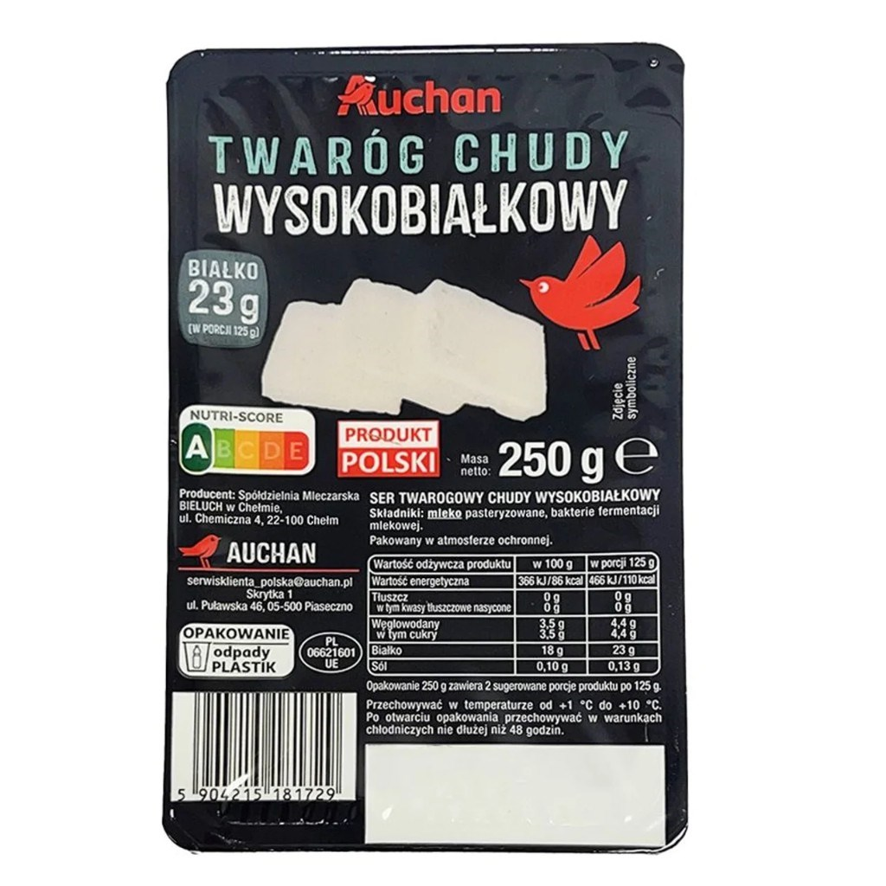
Twaróg chudy wysokobiałkowy — Auchan, 250 g
Marka własna Auchan: 0% tłuszczu, Nutri-Score A, produkt polski (Bieluch). Na opakowaniu 23 g białka w porcji 125 g (czyli 18 g / 100 g). Prosty skład: mleko pasteryzowane i kultury mlekowe — klasyka pod redukcję i meal prep.
Porównaj z kartą twarogu chudego w bazie Proteiner.
Wartości odżywcze (w 100 g)
| Składnik | Ilość |
|---|---|
| Wartość energetyczna | 366 kJ / 86 kcal |
| Tłuszcz | 0 g |
| — w tym kwasy tłuszczowe nasycone | 0 g |
| Węglowodany | 3,5 g |
| — w tym cukry | 3,5 g |
| Białko | 18 g |
| Sól | 0,10 g |
Porcja 125 g ≈ 110 kcal i 23 g białka. Całe opakowanie 250 g ≈ 215 kcal i 45 g białka.
Hit z Auchan: Serek wiejski wysokobiałkowy Mlekovita SBA
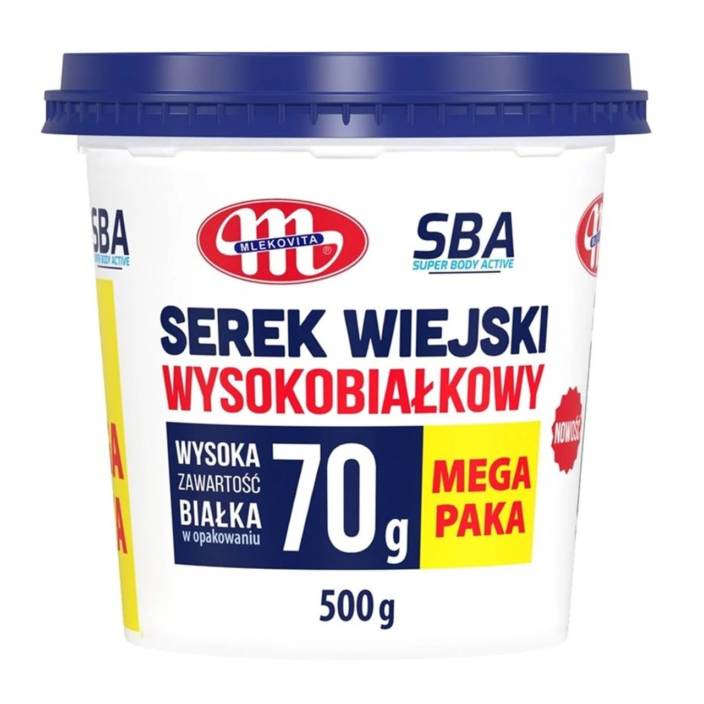
Serek wiejski wysokobiałkowy — Mlekovita Super Body Active (SBA), 500 g (MEGA PAKA)
Wiaderko 500 g z linii SBA: na etykiecie 70 g białka w całym opakowaniu. Wygodny na śniadanie, kolację i meal prep — więcej białka na 100 g niż klasyczny serek wiejski.
Porównaj z kartą serka wiejskiego w bazie Proteiner (makro poniżej z etykiety tego produktu).
Wartości odżywcze (w 100 g)
| Składnik | Ilość |
|---|---|
| Wartość energetyczna | 388 kJ / 92 kcal |
| Tłuszcz | 3,0 g |
| — w tym kwasy tłuszczowe nasycone | 2,0 g |
| Węglowodany | 2,3 g |
| — w tym cukry | 2,3 g |
| Białko | 14 g |
| Sól | 0,70 g |
Całe opakowanie 500 g ≈ 460 kcal i 70 g białka (zgodnie z deklaracją „70 g w opakowaniu”).
Hit z Auchan: Arla Protein Delite Cheese
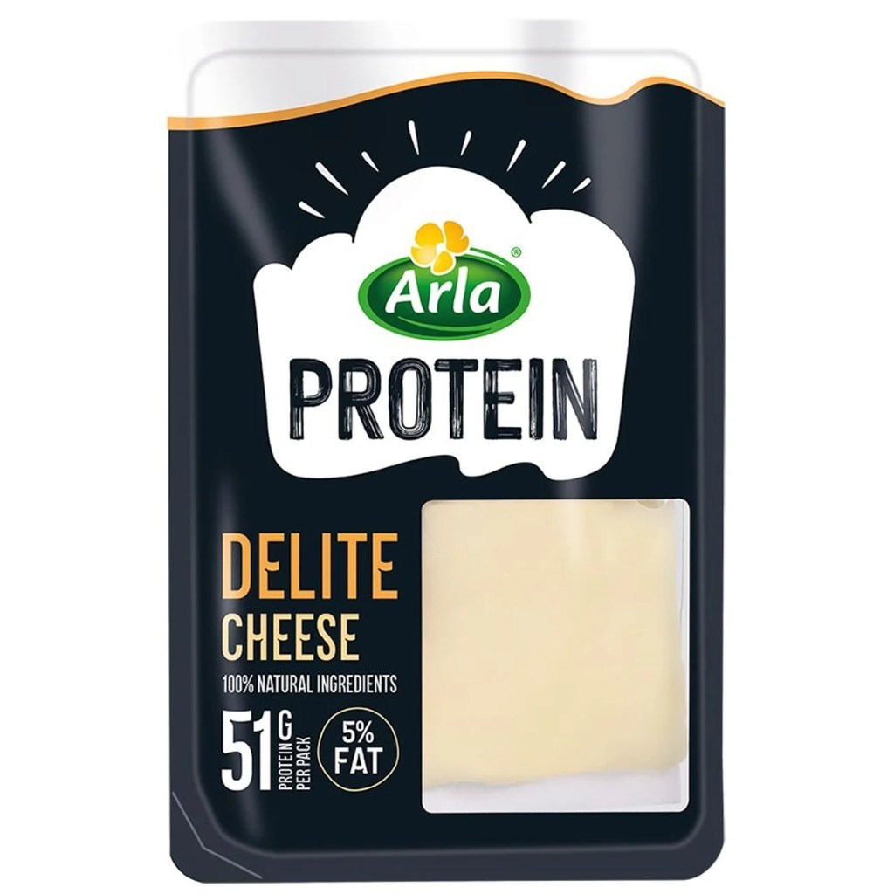
Arla Protein Delite Cheese — plastry sera wysokobiałkowego
Ser w plastrach z linii Arla Protein: na opakowaniu 51 g białka w paczce i 5% tłuszczu, 100% naturalne składniki. Wygodny na kanapki i meal prep — dużo białka przy umiarkowanych kaloriach.
Przy ~34 g białka / 100 g paczka z deklaracją 51 g białka to ok. 150 g produktu. Sprawdź też inne sery w bazie Proteiner.
Wartości odżywcze (w 100 g)
| Składnik | Ilość |
|---|---|
| Wartość energetyczna | 785 kJ / 186 kcal |
| Tłuszcz | 5 g |
| — w tym kwasy tłuszczowe nasycone | 3,2 g |
| Węglowodany | <0,5 g |
| — w tym cukry | <0,5 g |
| Białko | 34 g |
| Sól | 1,2 g |
Przy deklaracji 51 g białka w opakowaniu (≈150 g) paczka to ok. 279 kcal.
Gdy chce Wam się słodkiego: GO ON Protein Crisp
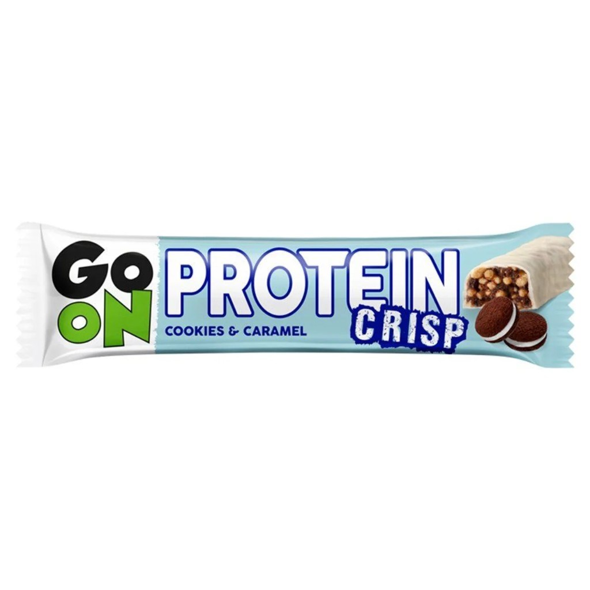
GO ON Protein Crisp — Cookies & Caramel
Jeśli macie ochotę podjeść coś słodkiego, ten baton będzie lepszym wyborem niż klasyczna czekolada czy ciastko: w 100 g jest ok. 20 g białka, a smak (cookies & caramel) realnie gasi ochotę na deser. To nadal przekąska kaloryczna (dużo cukrów i tłuszczu) — traktujcie ją jako zamiennik słodyczy, nie jako rdzeń diety zamiast twarogu czy kurczaka. W Auchan jest też szeroki wybór smaków batonów proteinowych (GO ON, OSHEE, Mlekovita SBA i inne) — Cookies & Caramel to tylko jeden z przykładów; więcej poniżej.
W praktyce: zjedzcie jednego batona zamiast czekolady albo pączka, a nie „na dokładkę” do pełnego obiadu. Resztę białka domykajcie nabiałem i mięsem z listy poniżej.
Wartości odżywcze (w 100 g)
| Składnik | Ilość |
|---|---|
| Wartość energetyczna | 1816 kJ / 432 kcal |
| Tłuszcz | 16 g |
| — w tym kwasy tłuszczowe nasycone | 9,6 g |
| Węglowodany | 53 g |
| — w tym cukry | 31 g |
| Błonnik | 0,8 g |
| Białko | 20 g |
| Sól | 1,0 g |
To produkt deserowy high-protein — sprawdzajcie wagę batona na opakowaniu, żeby przeliczyć porcję (makro powyżej dotyczy 100 g).
Duży wybór smaków batonów proteinowych
W Auchan półka ze słodkim high-protein nie kończy się na jednym batonie — jest duży wybór smaków i marek (GO ON, OSHEE, Mlekovita SBA i inne). Wybierajcie ten, który naprawdę Wam smakuje: wtedy łatwiej trzymać się zamiennika zamiast wracać do zwykłej czekolady. Poniżej przykłady z półki:
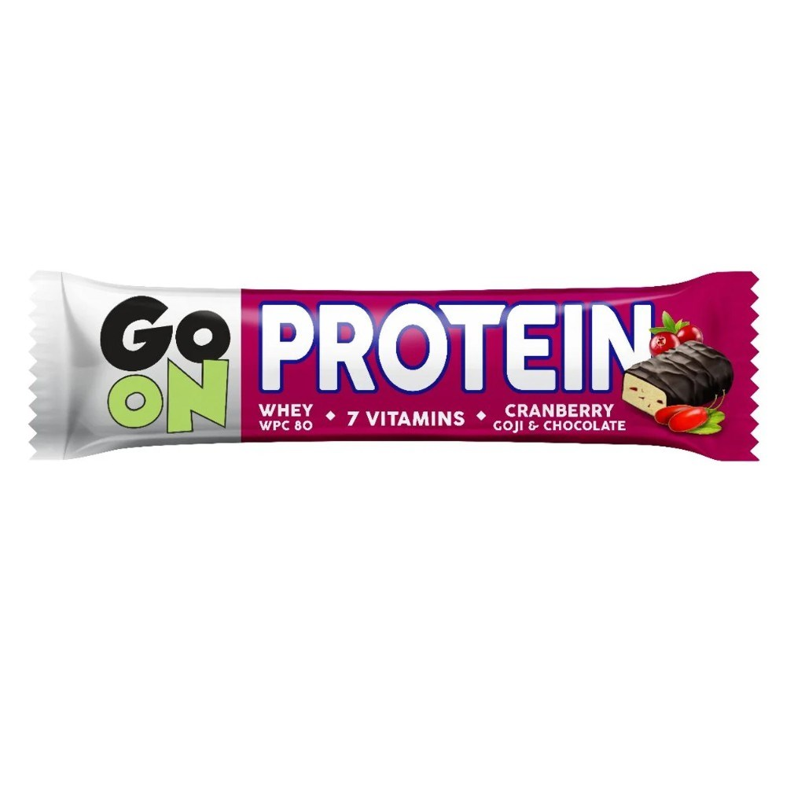
GO ON Protein — Cranberry Goji & Chocolate WPC 80 · 7 witamin · kolejny smak linii GO ON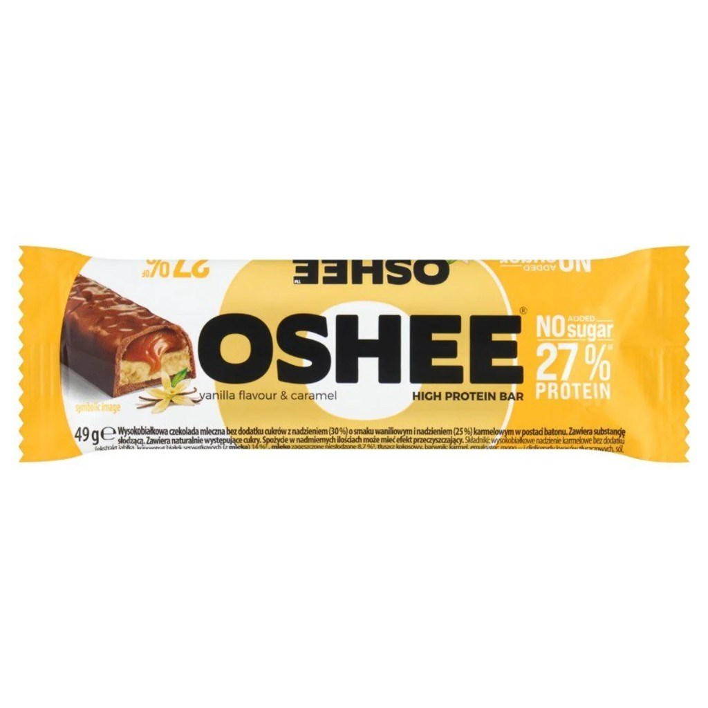
OSHEE High Protein Bar Wanilia & karmel · 27% białka · bez dodatku cukru · 49 g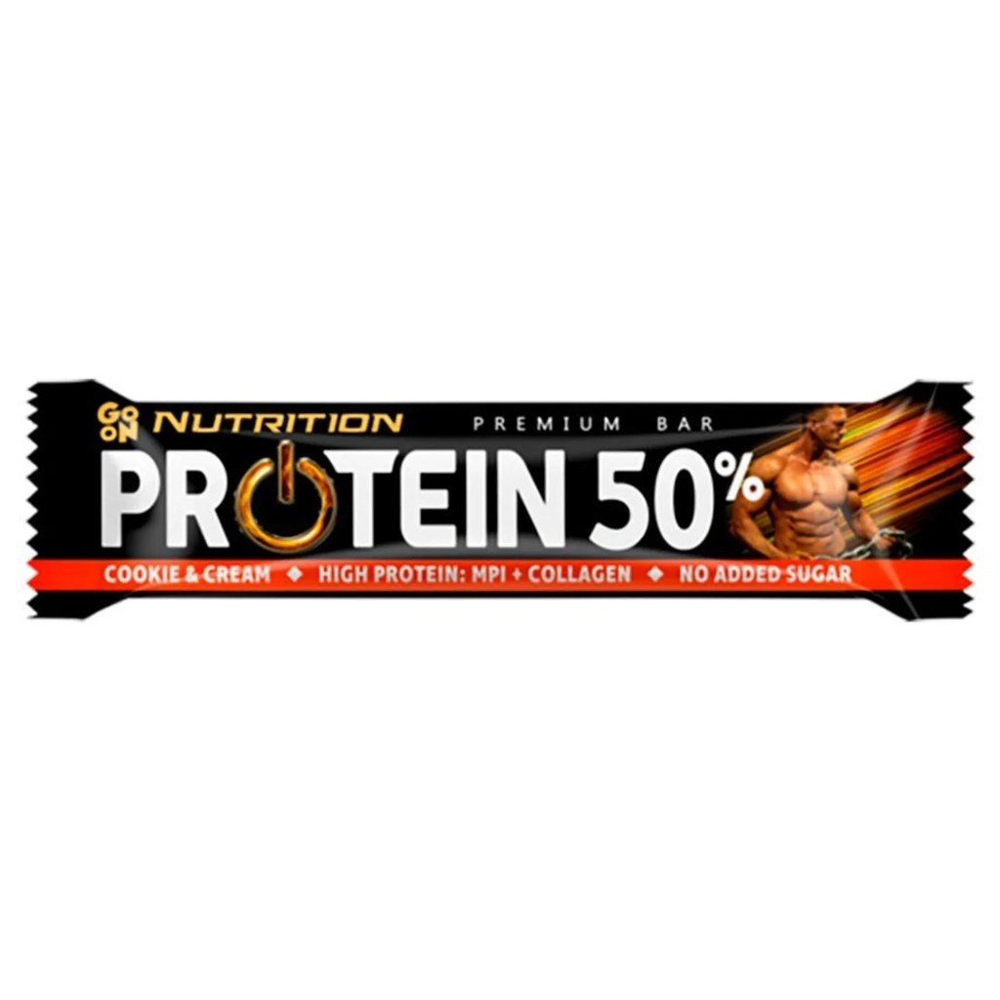
GO ON Premium Bar Protein 50% Cookie & Cream · MPI + kolagen · bez dodatku cukru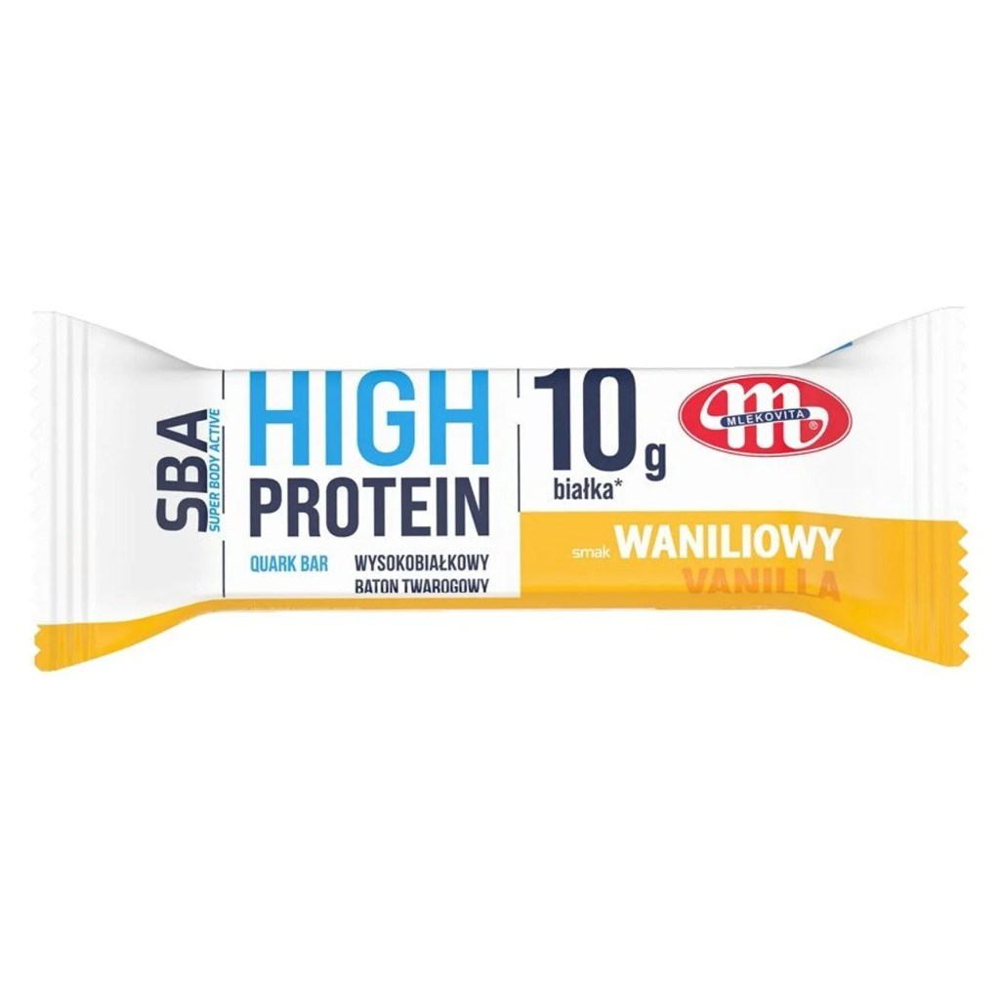
Mlekovita SBA — baton twarogowy High Protein Quark Bar · wanilia · ok. 10 g białka w sztuceTo tylko wycinek — na półce bywa więcej smaków tych samych linii. Zawsze sprawdźcie etykietę (białko, cukry, kcal na sztukę).
Produkty warte uwagi
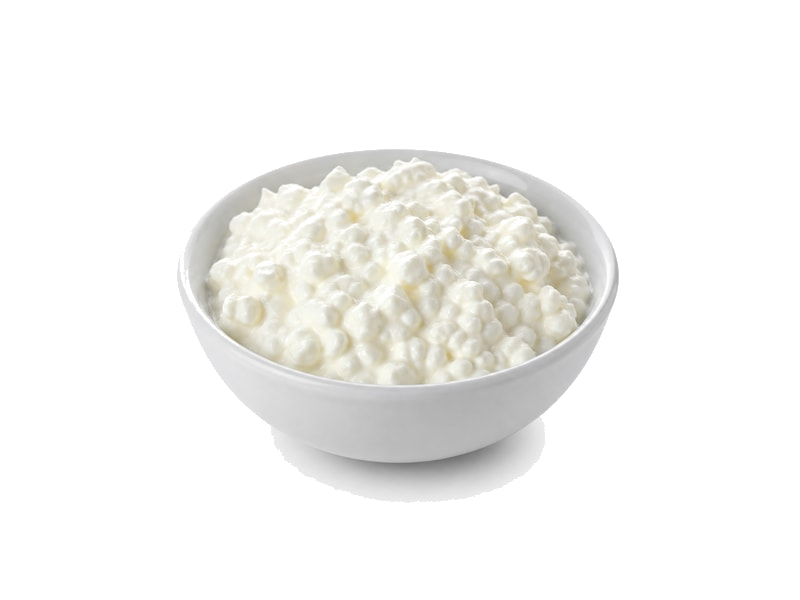
Serek wysokobiałkowy Szybka kolacja / meal prep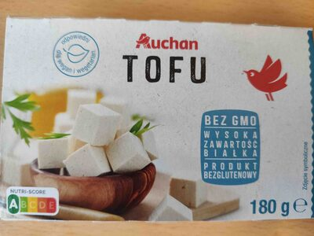
Tofu Auchan / naturalne Dni bez mięsa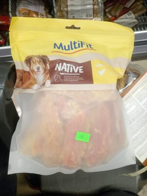
Pierś z kurczaka Duże tacki pod meal prep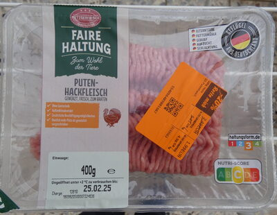
Indyk mielony Wybieraj niższy % tłuszczu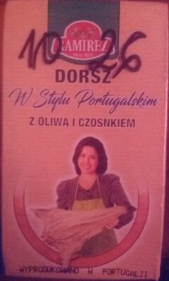
Dorsz Ryba z lady lub mrożona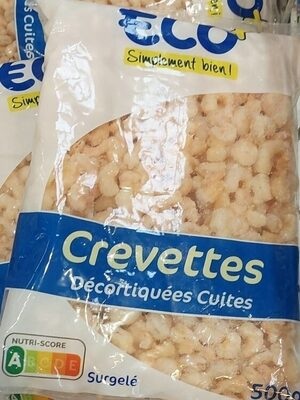
Krewetki Dużo białka przy niskich kcal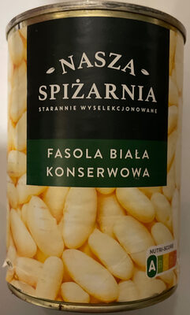
Fasola Strączki na dni bez mięsaZdjęcia produktów: społeczność Open Food Facts (ODbL) oraz redakcja Proteiner — przykładowe opakowania z asortymentu; oferta zmienia się w czasie.
Jak wybierać w Auchan
- Duże tacki piersi — piecz raz, jedz 3 dni.
- Mięso mielone z indyka — kotlety, sosy; wybieraj niższy % tłuszczu.
- Ryby z lady — dorsz, mintaj, czasem łosoś (więcej tłuszczu = więcej kcal).
- Nabiał w dużych wiaderkach — zwłaszcza twaróg Mlekovita SBA (0% tłuszczu, bez laktozy, 45 g białka / 500 g), twaróg chudy wysokobiałkowy marki własnej Auchan (18 g białka / 100 g, 0% tłuszczu, 250 g) i serek wiejski Mlekovita SBA (14 g białka / 100 g, 70 g w opakowaniu 500 g), Arla Protein Delite Cheese (34 g białka / 100 g, 5% tłuszczu), serek HP, kefir jako napój (mniej białka).
- Strączki i tofu — na dni bez mięsa.
- Ochota na słodkie — lepiej GO ON Protein Crisp zamiast zwykłej czekolady czy ciastka (to zamiennik deseru, nie baza diety).
Strategia zakupów
Jedź raz w tygodniu: mięso + ryba + duże opakowania nabiału. Codzienne drobne zakupy (jajka, skyr) domykaj w dyskoncie bliżej domu — zobacz też Biedronkę i Lidl.
Inne sieci i dalej
- Źródła białka w Biedronce
- Źródła białka w Lidlu
- Źródła białka w Carrefour
- Przegląd 4 sieci
- Planowanie posiłków · Kalkulator BMI